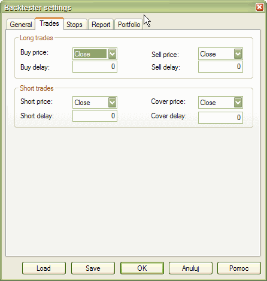
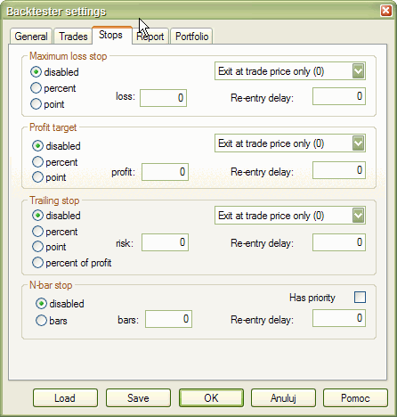
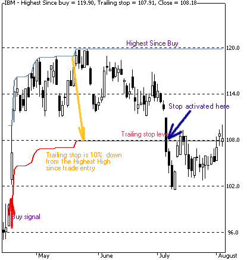

Introduction
One of the most useful things that you can do in the analysis window is to back-test your trading strategy on historical data. This can give you valuable insight into the strengths and weaknesses of your system before investing real money. This single AmiBroker feature can save you a lot of money.
Writing your trading rules
First, you need to have objective (or mechanical) rules to enter and exit the market. This step is the basis of your strategy, and you need to think about it yourself, since the system must match your risk tolerance, portfolio size, money management techniques, and many other individual factors.
Once you have your own rules for trading, you should write them as buy and sell rules in AmiBroker Formula Language (plus short and cover if you want to also test short trading).
In this chapter, we will consider a very basic moving average crossover system. The system buys stocks/contracts when the closing price rises above a 45-day exponential moving average and sells stocks/contracts when the closing price falls below a 45-day exponential moving average.
The exponential moving average can be calculated in AFL using its built-in function EMA. All you need to do is specify the input array and averaging period, so the 45-day exponential moving average of closing prices can be obtained by the following statement:
ema( close, 45 );
The close identifier refers to the built-in array holding closing prices of the currently analyzed symbol.
To test if the closing price crosses above the exponential moving average, we will use the built-in cross function:
buy = cross( close, ema( close, 45 ) );
The above statement defines a buy trading rule. It gives "1" or "true" when the closing price crosses above ema( close, 45 ). Then we can write the sell rule which would give "1" when the opposite situation occurs - the closing price crosses below ema( close, 45 ):
sell = cross( ema( close, 45 ), close );
Please note that we are using the same cross function but the opposite order of arguments.
So the complete formula for long trades will look like this:
buy = cross( close, ema( close, 45 ) );
sell = cross( ema( close, 45 ), close );
NOTE: To create a new formula, please open Formula Editor using Analysis->Formula Editor menu, type the formula and choose Tools->Send to Analysis menu in the Formula Editor
Back-testing
To back-test your system, just click on the Back test button in the Automatic Analysis window. Make sure you have typed in the formula that contains at least 'buy' and 'sell' trading rules (as shown above). When the formula is correct, AmiBroker starts analyzing your symbols according to your trading rules and generates a list of simulated trades. The whole process is very fast - you can back-test thousands of symbols in a matter of minutes. The progress window will show you estimated completion time. If you want to stop the process, you can just click the Cancel button in the progress window.
Analyzing results
When the process is finished, the list of simulated trades is shown in the bottom part of the Automatic Analysis window (the Results pane). You can examine when the buy and sell signals occurred just by double-clicking on a trade in the Results pane. This will give you raw or unfiltered signals for every bar where buy and sell conditions are met. If you want to see only single trade arrows (opening and closing currently selected trade), you should double-click the line while holding the SHIFT key down. Alternatively, you can choose the type of display by selecting the appropriate item from the context menu that appears when you click on the Results pane with the right mouse button.
In addition to the results list, you can get very detailed statistics on the performance of your system by clicking on the Report button. To find out more about the report's statistics, please check out Report window description.
Changing your back-testing settings
The back-testing engine in AmiBroker uses some predefined values to perform its task, including the portfolio size, periodicity (daily/weekly/monthly), amount of commission, interest rate, maximum loss and profit target stops, type of trades, price fields, and so on. All these settings can be changed by the user using the Settings window. After changing the settings, please remember to run your back-testing again if you want the results to be in sync with the settings.
For example, to back-test on weekly bars instead of daily bars, just click on the Settings button, select 'Weekly' from the Periodicity combo box, and click OK, then run your analysis by clicking 'Back test'.
Reserved variable names
The following table shows the names of reserved variables used by Automatic Analyzer. The meaning and examples of using them are given later in this chapter.
| Variable | Usage | Applies to |
| buy | defines "buy" (enter long position) trading rule | Automatic Analysis, Commentary |
| sell |
defines "sell" (close long position) trading rule |
Automatic Analysis, Commentary |
| short | defines "short" (enter short position - short sell) trading rule | Automatic Analysis |
| cover | defines "cover" (close short position - buy to cover) trading rule | Automatic Analysis |
| buyprice | defines buying price array (this array is filled in with the default values according to the Automatic Analyzer settings) | Automatic Analysis |
| sellprice | defines selling price array (this array is filled in with the default values according to the Automatic Analyzer settings) | Automatic Analysis |
| shortprice | defines short selling price array (this array is filled in with the default values according to the Automatic Analyzer settings) | Automatic Analysis |
| coverprice | defines buy to cover price array (this array is filled in with the default values according to the Automatic Analyzer settings) | Automatic Analysis |
| exclude | If defined, a true (or 1) value of this variable excludes the current symbol from scan, exploration, or back-test. It is also not considered in buy-and-hold calculations. Useful when you want to narrow your analysis to a certain set of symbols. | Automatic Analysis |
| roundlotsize | defines round lot sizes used by the backtester (see explanations below) | Automatic Analysis (new in 4.10) |
| ticksize | defines the tick size used to align prices generated by built-in stops (see explanations below) (note: it does not affect entry/exit prices specified by buyprice/sellprice/shortprice/coverprice) | Automatic Analysis (new in 4.10) |
| pointvalue | allows reading and modifying a future contract's point value (see
backtesting futures) CAVEAT: this AFL variable is by default set to 1 (one) regardless of the contents of the Information window UNLESS you turn on Futures Mode (SetOption("FuturesMode", True )) |
Automatic Analysis (new in 4.10) |
| margindeposit | allows reading and modifying a future contract's margin (see backtesting futures) | Automatic Analysis (new in 4.10) |
| positionsize |
Allows control over the dollar amount or percentage of portfolio that is invested in the trade (see explanations below) |
Automatic Analysis (new in 3.9) |
Advanced concepts
Until now, we discussed fairly simple use of the backtester. AmiBroker, however, supports much more sophisticated methods and concepts that will be discussed later in this chapter. Please note that a beginner user should first experiment a little with the easier topics described above before proceeding.
So, when you are ready, please take a look at the following recently introduced features of the backtester:
a) AFL scripting host for advanced formula writers
b) enhanced support for short trades
c) how to control order execution price from the script
d) various kinds of stops in the backtester
e) position sizing
f) round lot size and tick size
g) margin account
h) backtesting futures
AFL scripting host is an advanced topic that is covered in a separate document available here, and it will not be discussed in this document. Remaining features are much easier to understand.
Short trade support
In the previous versions of AmiBroker, if you wanted to back-test a system using both long and short trades, you could only simulate a stop-and-reverse strategy. When a long position was closed, a new short position was opened immediately. It was because 'buy' and 'sell' reserved variables were used for both types of trades.
Now (with version 3.59 or higher), there are separate reserved variables for opening and closing long and short trades:
buy - "true" or 1 value opens long trade
sell - "true" or 1 value closes long trade
short - "true" or 1 value opens short trade
cover - "true" or 1 value closes short trade
So, in order to back-test short trades, you need to assign 'short' and 'cover' variables.
If you use a stop-and-reverse system (always in the market), simply assign 'sell'
to 'short' and 'buy' to 'cover':
short = sell;
cover = buy;
This simulates the way pre-3.59 versions worked.
But now AmiBroker enables you to have separate trading rules for going long and for going short as shown in this simple example:
// long trades entry and exit rules:
buy = cross( cci(), 100 );
sell = cross( 100, cci() );
// short trades entry and exit rules:
short = cross( -100, cci() );
cover = cross( cci(), -100 );
Note that in this example, if CCI is between -100 and 100, you are out of the
market.
Controlling trade price
AmiBroker now provides 4 new reserved variables for specifying the price at which 'buy', 'sell', 'short', and 'cover' orders are executed. These arrays have the following names: 'buyprice', 'sellprice', 'shortprice', and 'coverprice'.
The main application of these variables is controlling the trade price:
BuyPrice = IIF( dayofweek() == 1, HIGH, CLOSE );
// on monday buy at high, otherwise buy on close
So you can write the following to simulate real stop orders:
BuyStop = ... the formula for buy stop level;
SellStop = ... the formula for sell stop level;
// if anytime during the day prices rise above buystop level (high>buystop)
// the buy order takes place (at buystop or low whichever is higher)
Buy = Cross( High, BuyStop );
// if anytime during the day prices fall below sellprice level ( low < sellstop )
// the sell order takes place (at sellstop or high whichever is lower)
Sell = Cross( SellPrice, SellStop);
BuyPrice = max( BuyStop, Low ); // make sure buy price not less than Low
SellPrice = min( SellStop, High ); // make sure sell price not greater than High
Please note that AmiBroker presets 'buyprice', 'sellprice', 'shortprice', and 'coverprice' array variables with the values defined in the System Test Settings window (shown below), so you can, but don't need to, define them in your formula. If you don't define them, AmiBroker works as in older versions.
During back-testing AmiBroker will check if the values you assigned to buyprice, sellprice, shortprice, coverprice fit into the high-low range of a given bar. If not, AmiBroker will adjust it to the high price (if price array value is higher than high) or to the low price (if price array value is lower than low)


Profit target stops
As you can see in the picture above, new settings for profit target stops are available in the System Test Settings window. Profit target stops are executed when the high price for a given day exceeds the stop level that can be given as a percentage or point increase from the buying price. By default, stops are executed at the price that you define as the 'sellprice' array (for long trades) or 'coverprice' array (for short trades). This behavior can be changed by using the "Exit at Stop" feature.
"Exit at Stop" feature
If you mark the "Exit at Stop" box in the settings, the stops will be executed at the exact stop level, i.e., if you define a profit target stop at +10% and your buy price was 50, your stop order will be executed at 55 even if your 'sellprice' array contains a different value (for example, a closing price of 56).
Maximum loss stops work in a similar manner - they are executed when the low
price for a given day drops below the stop level that can be given as a percentage
or point increase from the buying price.
Trailing stops
This kind of stop is used to protect profits as it tracks your trade. Each time a position's value reaches a new high, the trailing stop is placed at a higher level. When the profit drops below the trailing stop level, the position is closed. This mechanism is illustrated in the picture below (a 10% trailing stop is shown):

<The trailing stop, as well as two other kinds of stops, can be enabled from the user interface (the Automatic Analysis' Settings window) or from the formula level - using the ApplyStop function:
To reproduce the example above, you would need to add the following code to your Automatic Analysis formula:
ApplyStop( 2, 1, 10, 1 ); // 10% trailing stop, percent mode, exit at stop ON
or you can write it using predefined constants that are more descriptive
ApplyStop( stopTypeTrail, stopModePercent, 10, True );
Trailing stops can also be defined in points (dollars) and percentage of profit (risk). In the latter case, the amount parameter defines the percentage of profits that could be lost without activating the stop. So a 20% profit (risk) stop will exit a trade that had a maximum profit of $100 when the profit decreases below $80.
Dynamic stops
The ApplyStop() function now allows changing the stop level from trade to trade. This enables you to implement, for example, volatility-based stops very easily.
For example, to apply a maximum loss stop that will adapt the maximum acceptable loss based on a 10-day average true range, you would need to write:
ApplyStop( 0, 2, 2 * ATR( 10 ), 1 );
or you can write it using predefined constants that are more descriptive
ApplyStop( stopTypeLoss, stopModePoint, 2 * ATR( 10 ), True );
The function above will place the stop 2 times the 10-day ATR below the entry price.
As ATR changes from trade to trade, this will result in a dynamic, volatility-based stop level. Please note that the 3rd parameter of the ApplyStop function (the amount) is sampled at the trade entry and held throughout the trade. So, in the example above, it uses the ATR(10) value from the date of the entry. Further changes in ATR do not affect the stop level.
See the complete APPLYSTOP function documentation for more details.
Coding your own custom stop types
The ApplyStop function is intended to cover most "popular" kinds of stops. You can, however, code your own kinds of stops and exits using looping code. For example, the following re-implements a profit target stop and shows how to refer to the trade entry price in your formulas:
/* a sample low-level
implementation of Profit-target stop in AFL: */
Buy = Cross( MACD(), Signal()
);
priceatbuy=0;
for( i = 0;
i < BarCount;
i++ )
{
if( priceatbuy == 0 && Buy[
i ] )
priceatbuy = BuyPrice[
i ];
if( priceatbuy > 0 && SellPrice[
i ] > 1.1 * priceatbuy
)
{
Sell[ i ] = 1;
SellPrice[ i ] = 1.1 *
priceatbuy;
priceatbuy = 0;
}
else
Sell[ i ] = 0;
}
Position sizing
This is a new feature in version 3.9. Position sizing in the backtester is implemented by means of a new reserved variable:
PositionSize = <size array>
Now you can control the dollar amount or percentage of portfolio that is invested
in the trade.
If less than 100% of available cash is invested, then the remaining amount earns an interest rate as defined in the settings.
There is also a new checkbox in the AA Settings window: "Allow position size shrinking" - this controls how the backtester handles the situation when the requested position size (via the 'PositionSize' variable) exceeds available cash. When this flag is checked, the position is entered with a size shrunk to available cash. If it is unchecked, the position is not entered.
To see actual position sizes, please use a new report mode in the AA Settings window: "Trade list with prices and pos. size"
Finally, here is an example of Tharp's ATR-based position sizing technique coded in AFL:
Buy = <your buy formula here>
Sell = 0; // selling only by stop
TrailStopAmount = 2 * ATR( 20 );
Capital = 100000; /* IMPORTANT: Set it also in the Settings: Initial Equity
*/
Risk = 0.01*Capital;
PositionSize = (Risk/TrailStopAmount)*BuyPrice;
ApplyStop( 2, 2, TrailStopAmount, 1 );
The technique could be summarized as follows:
The total equity per symbol is $100,000. We set the risk level at 1% of total
equity. Risk level is defined as follows: if a trailing stop on a $50 stock
is at, say, $45 (the value of two ATRs against the position), the $5 loss is
divided into the $1,000 risk to give 200 shares to buy. So, the loss risk is
$1,000, but the allocation risk is 200 shares x $50/share or $10,000. So, we are
allocating 10% of the equity to the purchase but only risking $1,000. (Edited
excerpt from the AmiBroker mailing list)
Round lot size and tick size
Various instruments are traded with various "trading units" or "blocks". For example, you can purchase a fractional number of units of a mutual fund, but you cannot purchase a fractional number of shares. Sometimes you have to buy in lots of 10 or 100. AmiBroker now allows you to specify the block size at a global and per-symbol level.
You can define per-symbol round lot size in the Symbol->Information page (pic. 3). The value of zero means that the symbol has no special round lot size and will use "Default round lot size" (global setting) from the Automatic Analysis Settings page (pic. 1). If the default size is also set to zero, it means that a fractional number of shares/contracts is allowed.
You can also control the round lot size directly from your AFL formula using the 'RoundLotSize' reserved variable, for example:
RoundLotSize = 10;
Tick size
This setting controls the minimum price move for a given symbol. You can define it at a global and per-symbol level. As with round lot size, you can define a per-symbol tick size in the Symbol->Information page (pic. 3). The value of zero instructs AmiBroker to use "default tick size" defined in the Settings page (pic. 1) of the Automatic Analysis window. If the default tick size is also set to zero, it means that there is no minimum price move.
You can set and retrieve the tick size also from an AFL formula using the 'TickSize' reserved variable, for example:
TickSize = 0.01;
Note that the tick size setting affects ONLY trades exited by built-in stops and/or ApplyStop(). The backtester assumes that price data follow tick size requirements and it does not change the price arrays supplied by the user.
So, specifying a tick size makes sense only if you are using built-in stops, so exit points are generated at "allowed" price levels instead of calculated ones. For example, in Japan, you cannot have fractional parts of yen, so you should define the global tick size to 1, so built-in stops exit trades at integer levels.
Margin account
Account margin setting defines the percentage margin requirement for entire account. The default value of Account margin is 100. This means that you have to provide 100% funds to enter the trade, and this is the way the backtester worked in previous versions. But now you can simulate a margin account. When you buy on margin, you are simply borrowing money from your broker to buy stock. With current regulations, you can put up 50% of the purchase price of the stock you wish to buy and borrow the other half from your broker. To simulate this, just enter 50 in the Account margin field (see pic. 1). If your initial equity is set to 10,000, your buying power will be then 20,000 and you will be able to enter larger positions. Please note that this setting sets the margin for the entire account and it is NOT related to futures trading at all. In other words, you can trade stocks on a margin account.
Additional settings
Initially, the idea was to allow faster chart redraws by calculating the
AFL formula only for the part that is visible on the chart. In a similar
manner, the Automatic Analysis window can use a subset of available quotations
to calculate AFL, if the selected 'range' parameter is less than 'All
quotations'.
A detailed explanation of how QuickAFL works and how to control it is provided
in this Knowledge Base article: http://www.amibroker.com/kb/2008/07/03/quickafl/
See Also:
Portfolio-Level Backtesting article.
Backtesting Systems for Futures Contracts article.
APPLYSTOP function description
Using AFL Editor section of the guide.